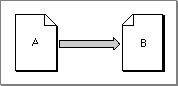

Legacy Document
Important: The information in this document is obsolete and should not be used for new development.
Important: The information in this document is obsolete and should not be used for new development.


Creating a Translation List
Your translation extension must be able to inform Macintosh Easy Open of its translation capabilities in response to thekTranslateGetFileTranslationListrequest code. To do this, you can define aDoGetFileTranslationListfunction in which you fill in a file translation list, defined by aFileTranslationListrecord. From the file translation list you return, Macintosh Easy Open learns which types of files your extension can translate into which other types. On the basis of this information, it may later call your extension to identify a particular document and possibly to translate it.The
FileTranslationListrecord has this structure:
TYPE FileTranslationList = RECORD modDate: LongInt; groupCount: LongInt; {group1SrcCount: LongInt;} {group1SrcEntrySize: LongInt;} {group1SrcTypes: ARRAY[1..group1SrcCount] OF FileTypeSpec;} {group1DstCount: LongInt;} {group1DstEntrySize: LongInt;} {group1DstTypes: ARRAY[1..group1DstCount] OF FileTypeSpec;} {repeat above six lines for a total of groupCount times} END;This record contains a modification date and a count of the number of translation groups that follow. Each translation group in the file translation list specifies a collection of file types from which the extension can translate (thegroup1SrcTypesfield) and a collection of file types into which the extension can translate (thegroup1DstTypesfield). Within a translation group, your extension must be able to translate any of the source types into any of the destination types.You might have different translation groups corresponding to different categories of documents. For instance, you can place word-processing documents in one group, spreadsheet documents in another, and so on. You are, however, free to group file types in whatever manner you like.
In most cases,
group1SrcCountandgroup1DstCountwill each be greater than 1, because most translators operate by translating through a particular data model. In these cases, it's also quite likely that the source and destination file types overlap or even coincide. Figure 7-8 illustrates a typical translation group.Figure 7-8 A translation group with multiple source and destination types
Similarly, you might write a translation extension that converts other file types into your own proprietary document format. In this case, you would have multiple source document types but only one destination type (
group1DstCountequal to 1), as illustrated in Figure 7-9.Figure 7-9 A translation group with a single destination type
It's possible, however, to have both
group1SrcCountandgroup1DstCountequal
to 1. This kind of translation is known as point-to-point translation. Figure 7-10 illustrates point-to-point translation.Figure 7-10 Point-to-point translation

Within any particular group of file types, you specify a particular document format using a file type specification, defined by the
- Note
- The number of translation groups you can specify in a file translation list is limited by memory considerations only.

FileTypeSpecdata type.
TYPE FileTypeSpec = RECORD format: FileType; hint: LongInt; flags: TranslationAttributes; catInfoType: OSType; catInfoCreator: OSType; END;A file type specification includes the file type, a hint reserved for use by your extension, a flags field, and the original file type and creator. See "File Type Specifications" beginning on page 7-46 for complete details on these fields.Listing 7-6 shows a simple routine that creates a file translation list. The translation extension containing this routine can translate both SurfWriter and SurfPaint documents to a format understood by TeachText.
Listing 7-6 Creating a file translation list
FUNCTION DoGetFileTranslationList (self: ComponentInstance; translationList: FileTranslationListHandle) : ComponentResult; TYPE MyList = RECORD modDate: LongInt; groupCount: LongInt; group1SrcCount: LongInt; group1SrcEntrySize: LongInt; group1SrcTypes: ARRAY[1..2] OF FileTypeSpec; group1DstCount: LongInt; group1DstEntrySize: LongInt; group1DstTypes: ARRAY[1..1] OF FileTypeSpec; END; MyListPtr = ^MyList; MyListHandle = ^MyListPtr; VAR myErr: OSErr; myPtr: MyListPtr; CONST kStamp = $A74520A8; {date of original list creation} BEGIN myErr := noErr; IF translationList^^.modDate <> kStamp THEN BEGIN {resize the handle so there's enough room} SetHandleSize(Handle(translationList), SizeOf(MyList)); myErr := MemError; IF myErr = noErr THEN BEGIN myPtr := MyListHandle(translationList)^; WITH myPtr^ DO BEGIN modDate := kStamp; {set creation date} groupCount := 1; {only 1 translation group} group1SrcCount := 2; {source side has two types} group1SrcEntrySize := SizeOf(FileTypeSpec); WITH group1SrcTypes[1] DO BEGIN format := 'SURF'; {SurfWriter document format} hint := 0; {no hint} flags := 0; {no flags} catInfoType := 'SURF'; {catalog type} catInfoCreator := 'TONY'; {catalog creator} END; WITH group1SrcTypes[2] DO BEGIN format := 'SPNT'; {SurfPaint document format} hint := 0; {no hint} flags := 0; {no flags} catInfoType := 'SPNT'; {catalog type} catInfoCreator := 'TONY'; {catalog creator} END; group1DstCount := 1; {destination side has one type} group1DstEntrySize := SizeOf(FileTypeSpec); WITH group1DstTypes[1] DO BEGIN format := 'ttro'; {TeachText document format} hint := 0; {no hint} flags := taDstDocNeedsResourceFork; {TeachText documents need a } { resource fork (for pictures)} catInfoType := 'ttro'; {catalog type} catInfoCreator := 'ttxt'; {catalog creator} END; END; {WITH myPtr^} END; {IF} END; {IF} DoGetFileTranslationList := myErr; END;Because the list of file types that this extension can translate never changes,DoGetFileTranslationListfills out a file translation list the first time Macintosh Easy Open calls it; every other time it is called,DoGetFileTranslationListsimply passes back the list it was passed.In all likelihood, your translation extension will rely on external translators to perform the actual translation of files or scraps. If so, it's also likely that the user will be able to add and remove translators used by your extension--possibly by moving translators into or out of some specific folder. In that case, your
DoGetFileTranslationListfunction could read the modification date of that folder and compare with a value you previously put in themodDatefield to determine whether to regenerate the translation list.